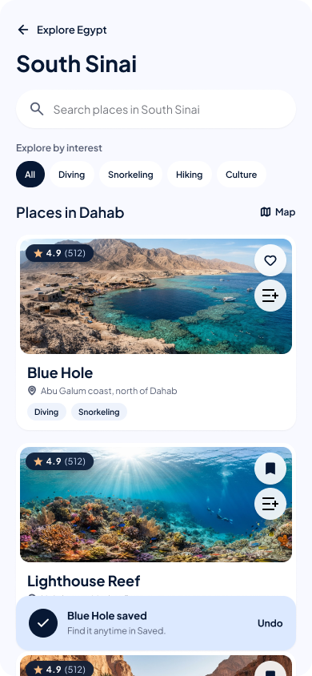
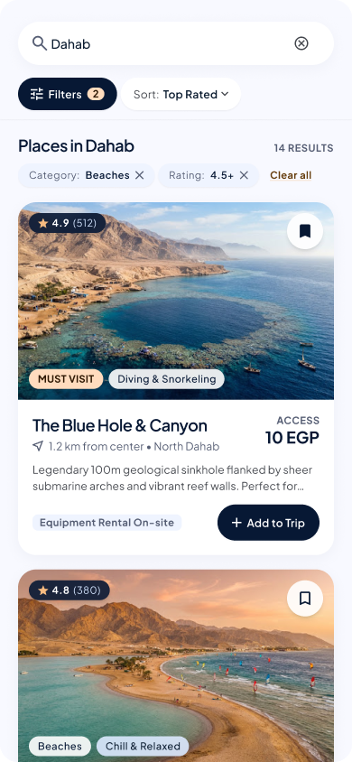
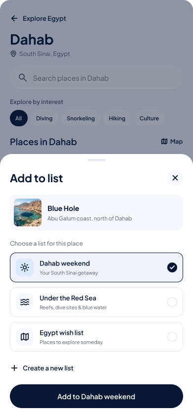

Egypt is full of stories.
Go discover yours.
Discover iconic landmarks, hidden treasures, and unforgettable places across Egypt — all in one place. Crafted for curious wanderers, culture seekers, and dreamers.
Every corner has a story.
From ancient wonders to breathtaking landscapes,
explore Egypt your way.
Your Egypt discovery companion.
Everything you need to uncover ancient heritage and modern wonders, without noise or unnecessary friction.
Discover Places
Find incredible destinations across Egypt, from world-famous attractions to hidden-away neighborhood gems.
Plan Your Visit
Explore visiting information, including hours, entrance fees, and helpful travel tips.
Save Favorites
Keep your favorite destinations handy and revisit them when you are ready to explore.
Share Experiences
Help other explorers across Egypt by contributing genuine reviews, helpful visiting suggestions and photos.
Explore more. Wonder more.
Experience Egypt with an intuitive companion designed for curiosity.



Your next adventure in three simple
steps.
No sign-up barriers, no ads, no complexity. Just pure exploration.
Discover places
Browse curated destinations across Egypt's governorates, from Alexandria to Aswan.
Find your inspiration
Filter by cultural categories, seasonal weather, and uncover insider visiting tips before you go.
Explore and share
Bookmark sacred sanctuaries to your device, experience the journey, and share authentic community photos.
Made for curious explorers.
TRIPDOZ was created with a simple idea: discovering Egypt should be easy, inspiring, and enjoyable. Whether you're exploring your hometown or planning your next getaway, there's always something new waiting to be discovered.
Egypt is not merely a collection of ancient monuments — it's a living tapestry of stories, coastal tranquil waters, desert silence, and bustling historic alleys. We built TRIPDOZ to honor this heritage with modern digital craftsmanship.
Your next discovery starts here.
There's so much more of Egypt waiting to be explored. Step into an unlimited,
beautiful travel directory right in your browser.